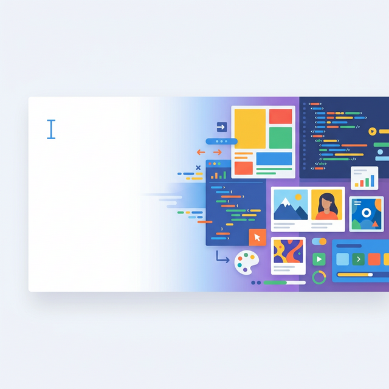

[ PROFILE_005 · EXPLORER ]
Spontaneous Software · 自造软件
Replit → Patina Systems
Tyler Angert 是一位典型的硅谷年轻人：名校背景，履历亮眼，思维独立，动手能力强，观点也颇具新意。这些年我持续关注他的博客与推文，尤其在浏览器领域，收获了不少前沿洞见。
💡 怎样让每个人都能自己做软件？
从研究教育技术到做 Scratch 原型、从 IDE 到 AI 辅助、从产品到架构，他不是在追求某个单点功能，而是在追一个问题的极限解：软件不再是专业人士的生产物，而是大众的表达方式。
他在 Replit 做 IDE、人机协作、Ghostwriter，本质是让不会写代码的人也能创造软件；他创办 Patina Systems，目标是消灭"空白画布焦虑"，让普通人能在已有工具上直接改装、即兴创造。
他痴迷"原生网站""AI 原生浏览器""本地脚本""轻量原生能力"，都是在降低软件生产门槛。他提出：「如果做一个应用像发一条推文一样轻松，会发生什么？」
用一句话压缩他一生的线索：怎样把写软件，变成像写字、拍照一样简单？
我们习惯把浏览器当作"窗口"：打开网页、查资料、读文章。但这限制了我们处理信息的方式。Tyler 提出把浏览器从"信息展示器"变成「认知外脑」。
浏览器的未来：从信息展示器到认知外脑 — 网页变成节点，灵感自动关联
一次性阅读
自动画出脑图
网页主题、与你以前读过的哪篇有关，自动串起来
乱跳网页
每一步操作可回溯
想回头看某条思路、某个搜索分支，随时回去
傻搜关键词
浏览器理解你在找啥
从页面中自动提取你关心的数据、图表、结论
一个人刷网页
跟朋友一起边看边聊
像 Google Docs 一起标注、一起评论
复制粘贴
随时写灵感 + 自动引用原文
选中 → 写感想 → 自动带上原文出处
手动建文件夹
内容自己长出结构
根据阅读习惯自动长出知识结构树
现代浏览器的限制不只是设计问题，而是架构问题。为什么我不能让网页访问我的本地数据，或跑个小模型？

从空白画布的焦虑到即兴创作的自由
在一个代码容易生成且一切触手可及的未来，我们主要的设计挑战是帮助人们克服「空白画布综合症」和「闪烁光标带来的困扰」。
Patina Systems 专注于帮助人们扩展他们已经熟悉的软件，而不是从头开始创建定制工具——即兴软件：快速创建和修改，鼓励即兴发挥，支持发散思维。
我的祖母几乎不会使用通讯应用。她只想要一个按钮来与我 FaceTime 通话。所以假设我做一个「Tyler 应用」——
理想的替代方案：一个我可以在手机上简单制作并直接发送给她的世界。这是为两个家庭成员制作的小型通讯工具，由一方作为礼物送给另一方。
每种产品基本上要么是一种存储形式（照片分享、笔记、云盘），要么是一种计算形式（电话/消息、支付、搜索）。再加上可选的社交层，基本就能得到所有产品。
创建类比是两个事物的结合：维度降低 + 语义转换（从数学意义上说）。你通常会进行一定程度的压缩/转换的组合，以向正确的受众传达某些内容。
看导数的数学定义——先压缩成核心概念，再转换成各种类比的"方向"。这给人 word2vec 的感觉。
行业/经济是基于技能和时间的不对称性。我为你付费是因为我无法生产它或没时间做。消费主义在很大程度上源于缺乏能力——当你无法做到时，你就会购买。
如果每个人都能构建自己的工具（编写代码的成本/时间接近于0），哪些类型的公司会贬值？整个行业/工作/组织结构会如何瓦解？
如果制作一个应用变得像拍照或发推文一样容易，你所构建的大部分价值应该集中在帮助人们理解他们自己需要什么，而不是你对他们模糊需求的理解。
人们想要的是：
而学习是达成这些目的的手段。对"教育科技"最大的批评是：它们往往只是披着巧克力外衣的学术内容，与实际"做事情"是分离的。
更具表现力的代码 = 需要编写的代码更少 = 需要预测的标记更少 = 更快、更强大、更准确的模型。
这也是反对"LLM最终会写字节码"的基本论点：一个经过训练以开发者方式思考和行动的模型同样会受益于更好的原语和抽象。
我们没有让高效地提出大量问题变得容易！线性对话不是深入多个方向探索新信息的最佳格式。
即使在一个段落中，我有大约 8 个关于不同术语的独立子对话也不算过分。我们需要更好的界面来分解密集的技术内容。
他挑战了那些习以为常的"隐形默认设置"——"网页只是页面""学习靠看内容""做小工具必须上架"。当一个观点直接质问这些设定，并给出同样合理甚至更高效的替代叙事时，大脑会出现预测误差——这种违背预期但又自洽的解释会立即带来新鲜感和洞察的跃迁。
像"空白画布综合症""产品=存储+计算+社交""类比=降维+语义转换"，以及把浏览器当作"认知外脑"——这些都把你原本说不清的卡点变成可引用的概念和可组合的原语。一旦有了词汇，你的注意力和设计动作就能聚焦。
给奶奶做一个只有"FaceTime"按钮的小应用，看似极具体的易用性问题，但他顺着这条线追到分发与安全模型、原生能力与 Web 边界、以及"原生网站"的制度性缺口。你看到的不只是一个点子的巧妙，而是「问题-系统-接口」三个层次的联动。
当他说产品本质上是"存储 + 计算 + 社交"，或者创造类比是"维度降低 + 语义转换"时，他给了你一个被简化过的强大透镜。这种感觉就像他揭示了一个秘方。
"为什么浏览器不直接暴露本地API？""如果每个人都能做软件，哪些行业会塌陷？"——这类问题不是闭合题，而是能衍生出无数分支的起点。你的惊讶来自于意识到自己原本的问题过小，而他给了一个更大的问题框架。